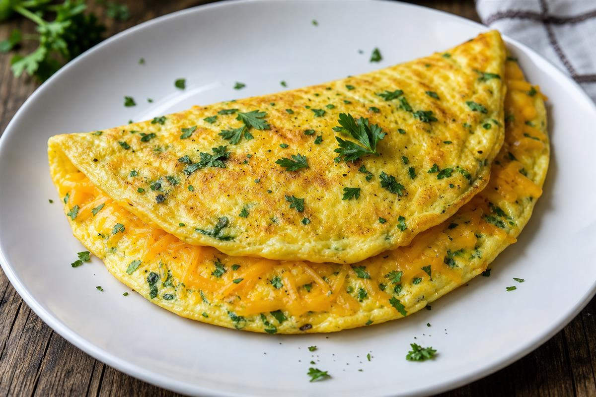
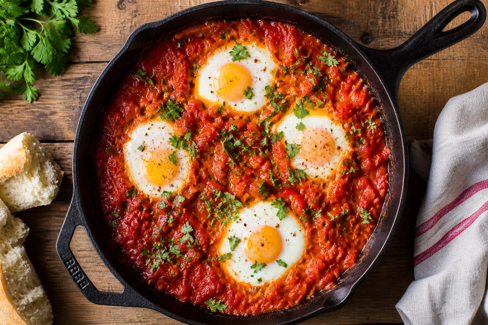
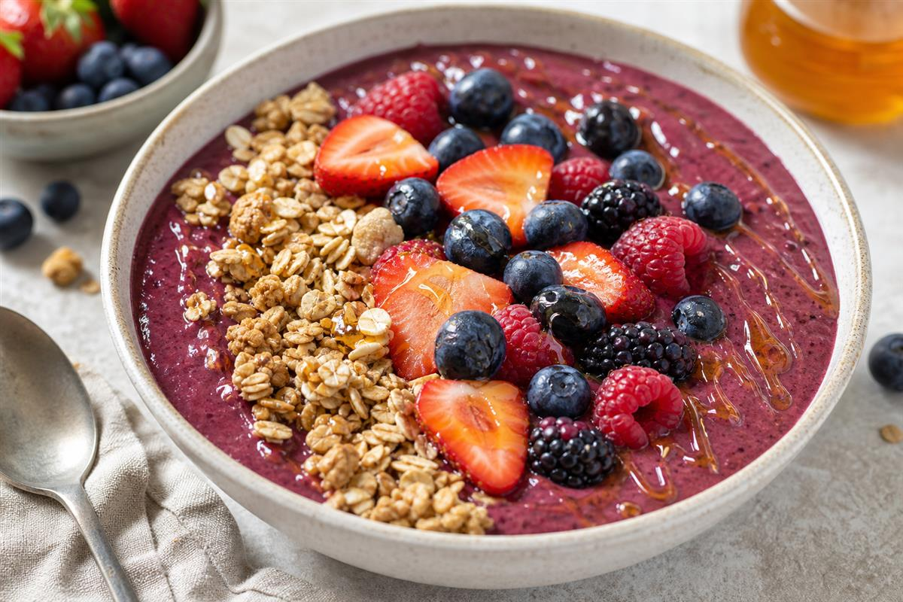
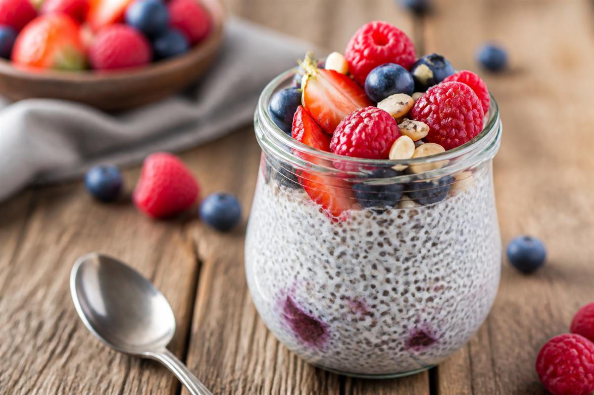
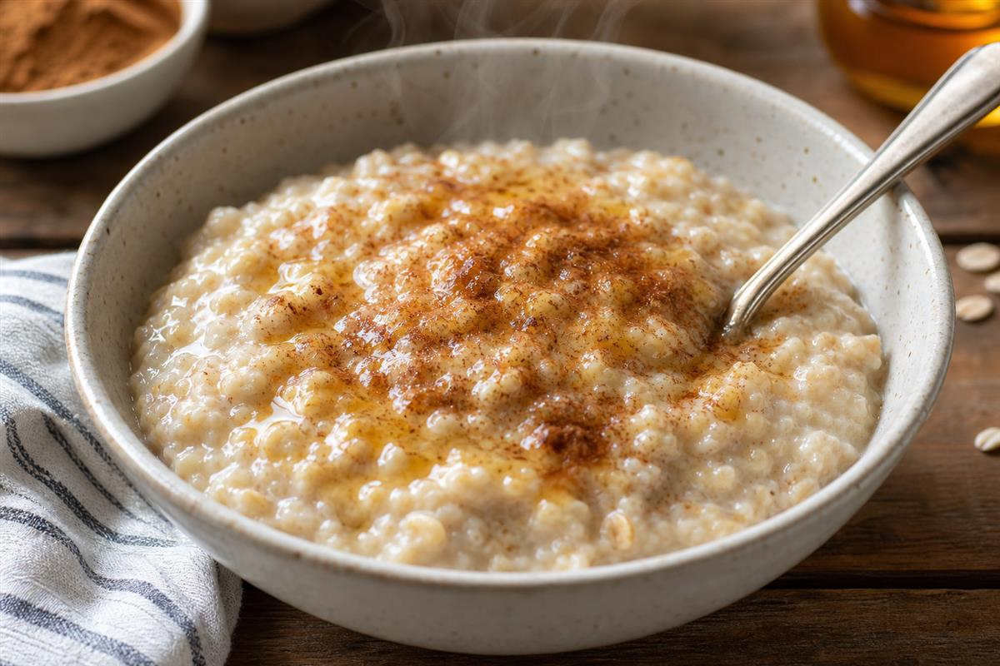
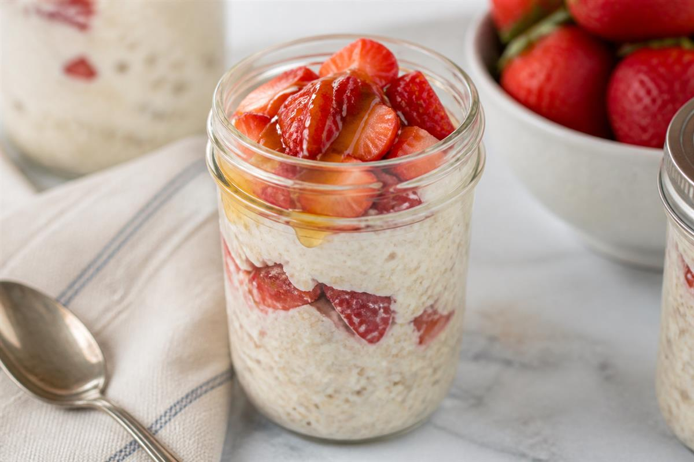

BREAKFAST
✿ ✿ ✿
Start the day with meals that are nourishing, gentle on the body, and designed to be gluten-friendly, onion-free, and IBS-conscious — without feeling like a compromise.
1. Egg Based Breakfasts
Protein-rich starts to fuel your morning adventures.
- Cheese & Herb Omelette
- Mushroom & Spinach Omelette
- Bacon & Avocado Eggs
- Soft Scrambled Eggs with Chives
- Shakshuka (Onion-Free)

Cheese & Herb Omelette

Shakshuka
2. Smoothies & Bowls
Light, refreshing, and easy on the stomach.
- Berry Smoothie Bowl
- Chia Pudding
- Yogurt & Honey Breakfast Bowl
- Berry & Banana Smoothie
- Tropical Smoothie Bowl
- Peanut Butter & Berry Bowl

Berry Smoothie Bowl

Yogurt & Honey Bowl

Chia Pudding
3. Warm & Comforting
Cozy mornings that feel like a hug.
- Creamy Cinnamon Oats
- Sweet Potato Breakfast Hash
- Gluten-Free Pancakes
- Cinnamon & Apple Oats
- French Toast (GF Bread)

Creamy Cinnamon Oats

GF Pancakes

Breakfast Hash
4. Quick & On-The-Go
For mornings when adventure calls early.
- Overnight Oats
- Breakfast Muffins (GF)
- Boiled Eggs & Fruit
- Yoghurt Parfait
- Rice Cakes with Peanut Butter & Banana

Overnight Oats
GF Muffins
Breakfast Muffins
Rice Cakes
Rice Cakes